欢迎来到【快播资源站】帮助中心
我们不定期在此更新CMS应用快播资源的使用教程，只为给您更好的服务！
本站图片地址后期将采用图床样式，可以调用， 采集的同时，也可以把图片下载到本地（推荐），以免杜绝日后出现类似图片失效的情况。
在采集的时候如果出现xml出错，建议你从新再次进入采集列表，就能正常采集了。
SeaCms(海洋CMS)教程
本站采集插件已经可以适配海洋CMS，支持M3U8在线播放，快速更新，稳定播放！
如何使用快播资源站采集？
javascript:;
请按以下步骤进行：依次点击【采集】-【资源库管理】，然后输入
资源库名称：快播资源站
资源库地址：https://api.qq.com/inc/ldg_sea.php
资源库rem3u8地址：https://api.qq.com/inc/ldg_searem3u8.php
资源库rere地址：https://api.qq.com/inc/ldg_searere.php
点击【增加】按钮即可，具体操作如下图
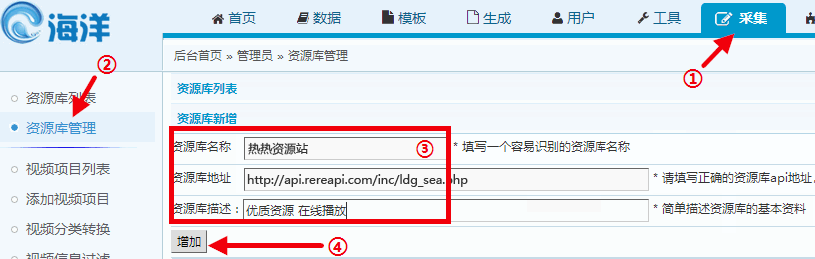
请按以下步骤进行：依次点击【首页】-【快捷菜单】，然后输入
快播全部资源,admin_reslib.php?ac=list&rid=&url=https://api.qq.com/inc/ldg_sea.php
快播资源rem3u8,admin_reslib.php?ac=list&rid=&url=https://api.qq.com/inc/ldg_searem3u8.php
快播资源rere,admin_reslib.php?ac=list&rid=&url=https://api.qq.com/inc/ldg_searere.php
点击【修改】按钮,刷新即可
播放暂没有数据或无法播放？
有的会员朋友采集资源后，播放片源没有自动选择对应的数据，这种情况通常是因为没有添加对应的播放器导致！
需要先再网站后台添加对应的播放器，然后再安装对应的播放器文件，才可以实现播放，以rem3u8播放器为例。（还有一个rere播放器）
请按以下步骤进行：依次点击【系统】-【播放来源管理】
然后依次输入来源名称：rem3u8 后缀：rem3u8
点击【保存】按钮即可，具体操作如下图
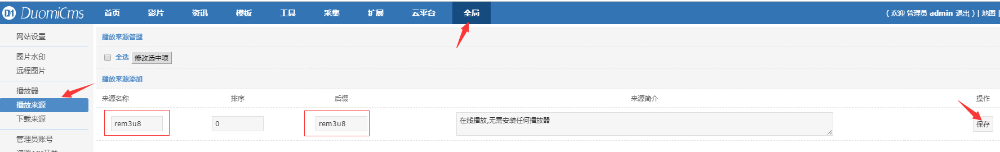
此时因为我们添加了播放器，将不再提示暂没有数据，但是可能依旧不能播放，下载解析包替换js\player目录中的文件即可
【8.6及以下版本】||【8.7及以上版本】
MacCms8(苹果CMS)教程
本站采集插件已经可以适配苹果CMS，支持M3U8在线播放，快速更新，稳定播放！
如何使用快播资源站采集？
请按以下步骤进行：依次点击【首页】-【快捷菜单配置】，然后添加下面内容
快播资源站,?m=collect-list-ac2--hour--xt-1-ct--group--flag-快播资源站-apiurl-https://api.qq.com/inc/api.php
快播资源站（rem3u8）,?m=collect-list-ac2--hour--xt-1-ct--group--flag-快播资源站-apiurl-https://api.qq.com/inc/api_rem3u8.php
快播资源站（rere）,?m=collect-list-ac2--hour--xt-1-ct--group--flag-快播资源站-apiurl-https://api.qq.com/inc/api_rere.php
点击【保存】按钮即可，具体操作如下图
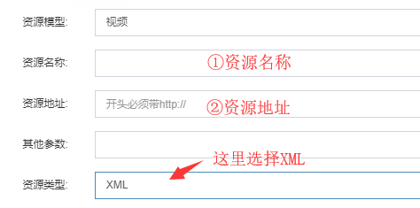
如何绑定分类
首次使用，需要绑定分类，如下图
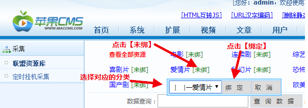
点击采集提示404？？
收到很多会员朋友反馈说采集提示404，文件路径：admin_maccj.php
后分析代码发现是因为网址参数丢失导致
请手动修改浏览器的网址，在admin/后面加上index.php?m=admin-index即可正常采集
没有选中播放片源？？
有的会员朋友采集资源后，播放片源没有自动选择对应的数据，这种情况通常是因为没有添加对应的播放器导致！
需要先再网站后台添加对应的播放器，才可以实现播放，以rem3u8的资源为例（注意要导入2个文件,另一个是rere）【点击下载播放器文件】
添加播放器后需要点击右上角的清空缓存，至此，可以愉快的采集和播放了
设置自动采集
执行参数:collect-cj-ac2-day-hour-24-xt-1-ct--group--flag-%e7%83%ad%e7%83%ad%e8%b5%84%e6%ba%90%e7%ab%99-apiurl-https://api.qq.com/inc/api.php
设置自动采集请按照图片指引操作
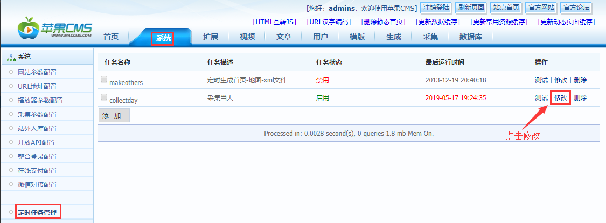
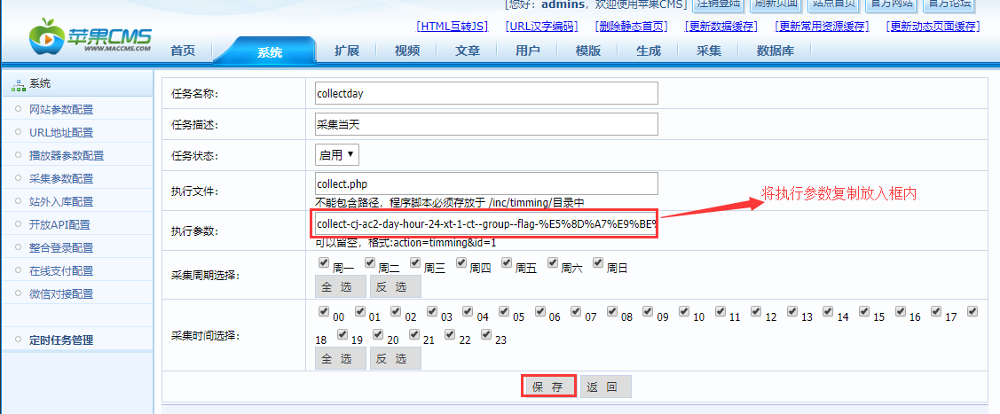
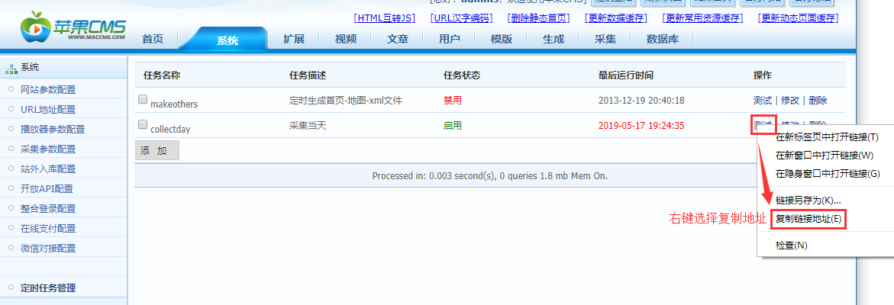
在宝塔上绑定此定时任务
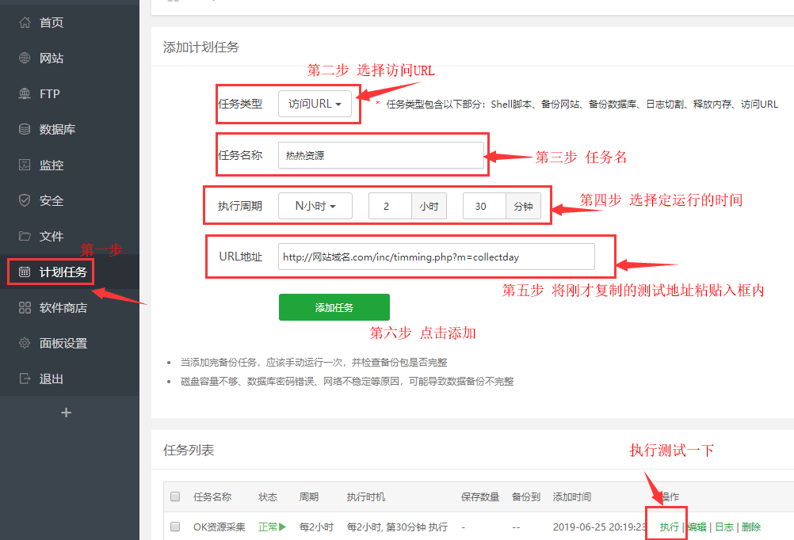
播放地址替换？？
因和谐原因，一些域名备案被取消导致用户网站部分视频不可观看，我们会在第一时间替换上新的域名解决此问题
给用户增加重新替换播放地址的麻烦对此我们深感抱歉!
UPDATE {pre}vod SET d_playurl=REPLACE(d_playurl,
'原始字符串', '替换成其他字符串')
！！！请务必将sql语句中的字段填写正确，原始字符与替换字符请按照对应关系填写修改
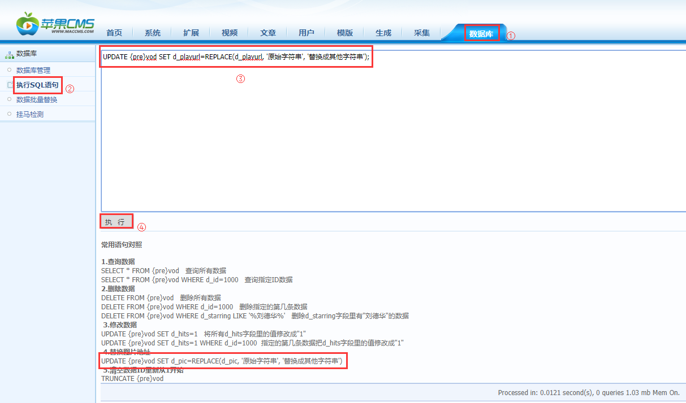
MacCms10(苹果CMS)教程
本站采集插件已经可以适配苹果CMSV10，支持M3U8在线播放和云播，快速更新，稳定播放！
如何使用快播资源站采集？
请按以下步骤进行：依次点击【采集】-【自定义资源库】-【添加】，在弹出的对话框中填写：
资源名称：快播资源站，接口地址：https://api.qq.com/inc/api.php【接口地址不能有空格,否则无法采集】
接口类型：xml，资源类型：视频
资源名称：快播资源站（rem3u8），接口地址：https://api.qq.com/inc/api_rem3u8.php
接口类型：xml，资源类型：视频
资源名称：快播资源站（rere），接口地址：https://api.qq.com/inc/api_rere.php
接口类型：xml，资源类型：视频
点击【保存】按钮即可，具体操作如下图
没有选中播放片源？？
有的会员朋友采集资源后，播放片源没有自动选择对应的数据，这种情况通常是因为没有添加对应的播放器导致！
需要先再网站后台添加对应的播放器，才可以实现播放。下载文件解压后按下图操作【下载播放器文件】
操作完成后点击后台右上角[清缓存]，此时再看数据，已经可以正确的选择播放器并且可正常播放了
设置自动采集
设置自动采集请按照图片指引操作
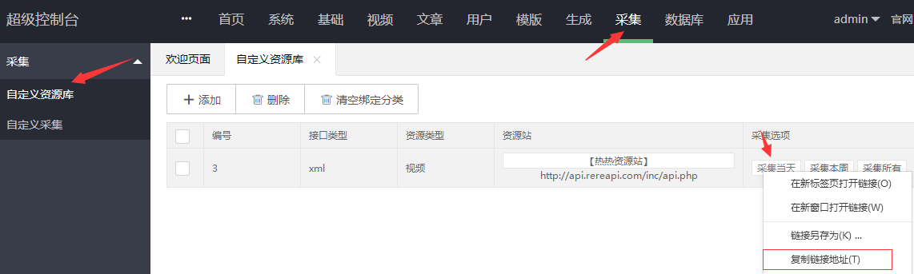
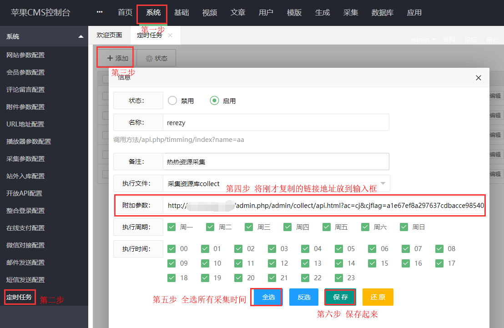

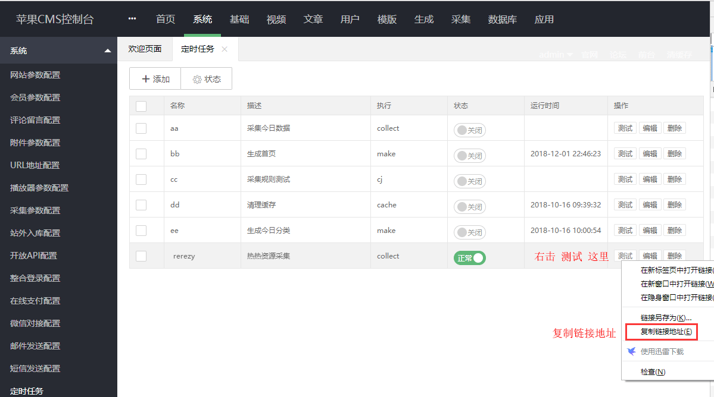
在宝塔上绑定此定时任务

后台自带解析口，不能播放请清除!!!
清除后台自带解析口
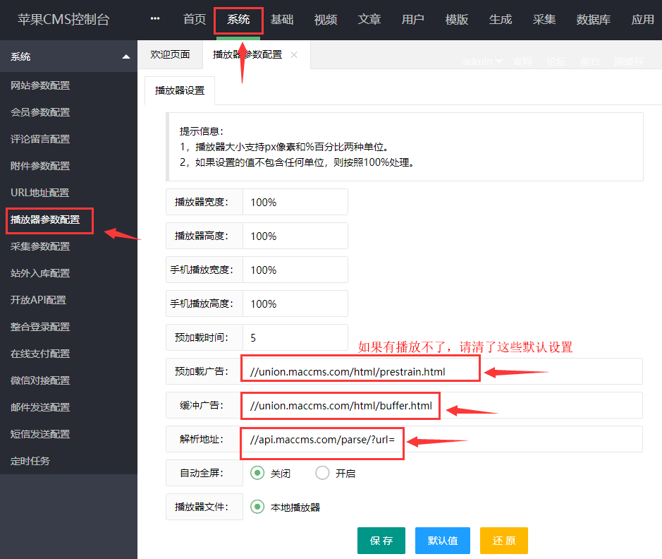
飞飞影视系统3.4教程
本站xml接口适用于飞飞3.4或飞飞4，请站长根据自己的喜好选择使用
如何配置安装采集？
请按以下步骤进行：依次点击【采集】-【添加资源库】，然后依次输入
资源名称：快播资源站，接口地址：https://api.qq.com/inc/feifei3/
资源名称：快播资源站(rem3u8)，接口地址：https://api.qq.com/inc/feifei3rem3u8/
资源名称：快播资源站(rere)，接口地址：https://api.qq.com/inc/feifei3rere/
点击【提交】按钮即可，具体操作如下图
如何增加播放器？
飞飞3.4
请按以下步骤进行：依次点击【视频】-【播放器设置】，然后在【添加播放器来源】依次输入
播放器名称：rem3u8 播放器标志：rem3u8
播放器名称：rere 播放器标志：rere
飞飞4.1
请按以下步骤进行：依次点击【系统】-【播放来源】，然后在【添加播放器来源】依次输入
播放器名称：rem3u8 播放器标志：rem3u8
播放器名称：rere 播放器标志：rere
点击【保存按钮】按钮即可
添加播放器后点击右上角【清空缓存】，此时因为我们添加了播放器，后台会自动选中正确的播放片源
但是可能依旧不能播放，下载解析包替换Public\player目录中的文件即可【点击下载】
另因为飞飞默认为云解析，可能不支持我们的资源，需要如下设置
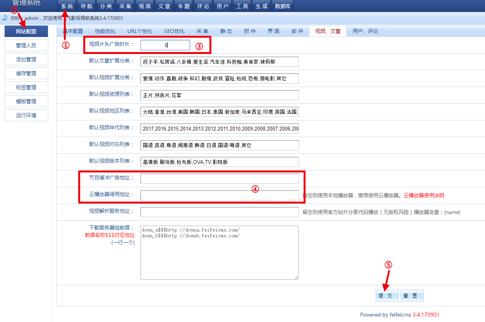
自动采集？
下载压缩包【点击下载】解压放在网站根目录
里面有linux.php和cfg.php两个文件
linux.php 文件可以自己定义名字，目的就是不让人知道你的文件名字是什么,注意名字不要有符号。
cfg.php的文件名就不要改了，用编辑器打开按照实际内容修改，最好不要用记事本打开
具体操作如下图
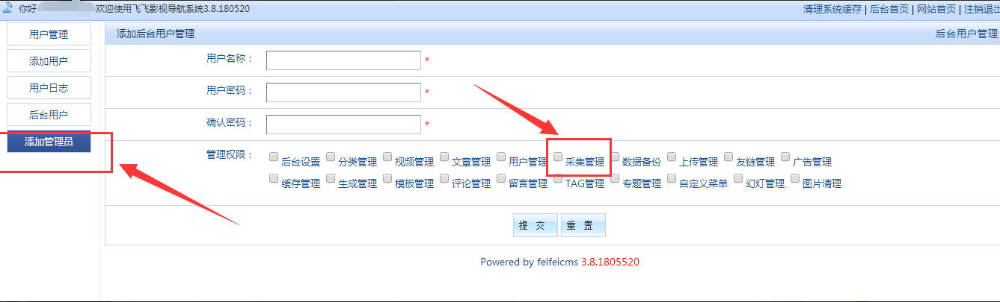
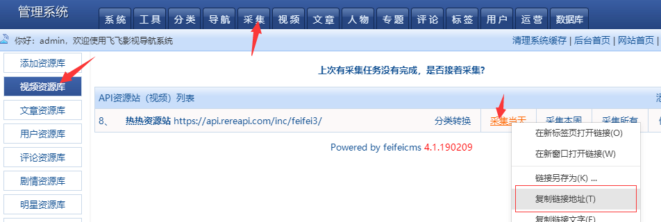
链接地址那里仅仅保留你自己复制的其他多余的请去除(第三个红框处)，若有多个请使用','分隔
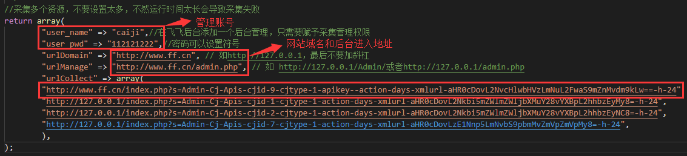
设置好了之后在宝塔上绑定此任务
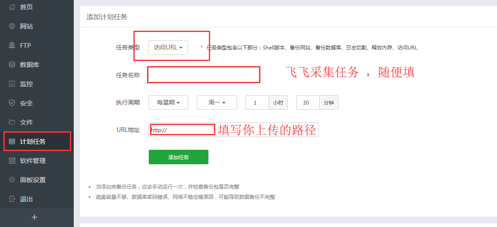
maxcms（马克思CMS）
本站采集插件已经可以适配MaxCms4.0，支持M3U8在线播放，快速更新，稳定播放！
如何使用快播资源站采集？
第一步，下载所需插件【点击下载】，下载完成后上传文件到后台目录（默认为admin）
之后请按以下步骤进行：依次点击【首页】-【快捷菜单】，然后增加一行
快播资源站,admin_rezy.asp
点击【修改】按钮即可，具体操作如下图
如何增加rem3u8播放器？
第一个，修改admin\imgs\main.js,在列表最后添加两行：
if(str.indexOf('rem3u8')>-1)
return "rem3u8"
if(str.indexOf('rere')>-1) return "rere"
第二个，修改inc\playerKinds.xml,在列表最后添加两行：
<player open="1" sort="0"
flag="rem3u8"
des="rem3u8"><intro><![CDATA[无需安装任何插件，即可快速播放]]></intro></player>
<player open="1" sort="0" flag="rere"
des="rere"><intro><![CDATA[无需安装任何插件，即可快速播放]]></intro></player>
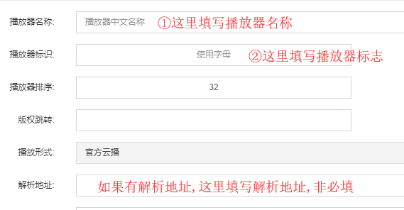
此时因为我们添加了播放器，后台会自动选中正确的播放片源
但是可能依旧不能播放，下载解析包替换player\playdy目录中的文件即可【点击下载】
CtCms（赤兔CMS）
本站采集插件拥有[赤兔CMS1.0]和[赤兔CMS2.0]两个版本，支持M3U8在线播放，快速更新，稳定播放！
如何使用快播资源站采集？
第一步，请分别下载所需插件
【赤兔】
下载完成后上传文件到网站根目录
采集以前,请添加播放器
采集方法:视频库管理->视频采集->快播资源站
如何增加播放器？
本站共有两个播放器,请复制下面的代码添加
rem3u8
代码:<iframe
src="https://www.rereplayer.com/dp/?url={url}"
marginwidth="0" marginheight="0" border="0" scrolling="no"
frameborder="0" topmargin="0" width="100%"
height="100%" allowfullscreen ></iframe>
rere
代码:<iframe
src="{url}"
marginwidth="0" marginheight="0" border="0" scrolling="no"
frameborder="0" topmargin="0" width="100%"
height="100%" allowfullscreen ></iframe>
具体操作,如下图(已rem3u8为例,另一个rere同理):
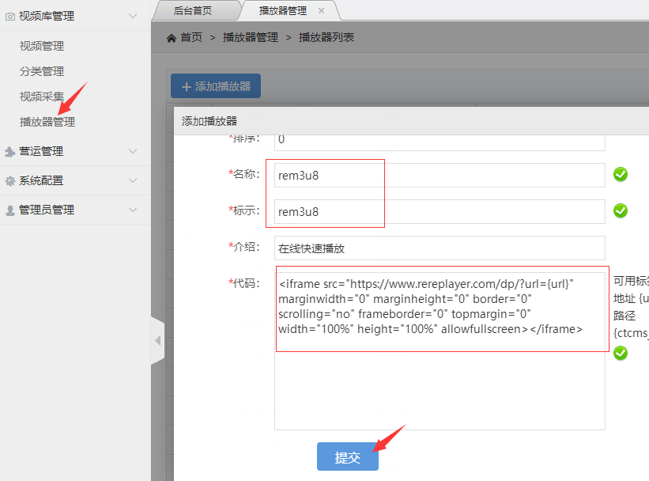
此时因为我们添加了播放器，后台会自动选中正确的播放片源
DuoMiCms(多米CMS)教程
本站采集插件已经可以适配多米CMS，支持M3U8在线播放，快速更新，稳定播放！
如何使用快播资源站采集？
请按以下步骤进行：依次点击【采集】-【采集资源库管理】，然后依次输入
资源库名称：快播资源站
资源库地址：https://api.qq.com/inc/ldg_sea.php
资源库地址（rem3u8）：https://api.qq.com/inc/ldg_searem3u8.php
资源库地址（rere）：https://api.qq.com/inc/ldg_searere.php
点击【增加】按钮即可，具体操作如下图
需要采集时,依次点击【采集】-【采集资源库列表】-快播资源站
播放暂没有数据或无法播放？
有的会员朋友采集资源后，播放片源没有自动选择对应的数据，这种情况通常是因为没有添加对应的播放器导致！
需要先再网站后台添加对应的播放器，然后再安装对应的播放器文件，才可以实现播放。
以rem3u8播放器为例（还有一个rere播放器哟）
请按以下步骤进行：依次点击【全局】-【播放来源】
然后依次输入来源名称：rem3u8 后缀：rem3u8
点击【保存】按钮,提示成功后点击【更新】即可，具体操作如下图
此时因为我们添加了播放器，将不再提示暂没有数据，但是可能依旧不能播放，下载解析包替换\player\html目录中的文件即可【点击下载】
ZanPianCMS（赞片CMS）V8
本站采集插件已经可以适配赞片CMS V8，支持M3U8在线播放，快速更新，稳定播放！
如何使用快播资源站采集？
资源库名称：快播资源站
快播资源网综合资源https://api.qq.com/inc/api.php?ac=list
快播资源网（rem3u8）：https://api.qq.com/inc/api_rem3u8.php?ac=list
快播资源网（rere）：https://api.qq.com/inc/api_rere.php?ac=list
请按照下图所示打开添加采集页面并添加采集api
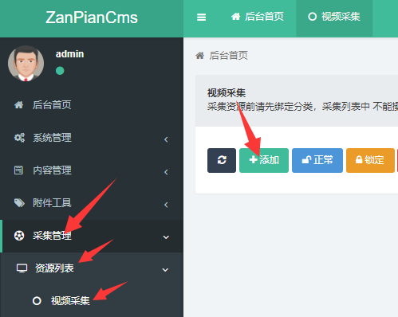
添加方法如下图
例子如下图
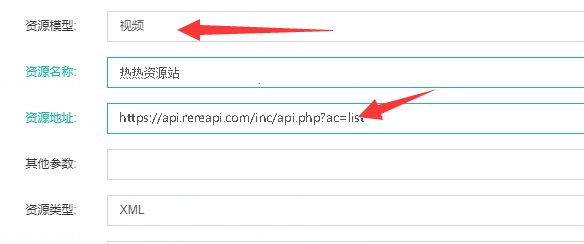
继续添加播放器
有的站长朋友采集资源后，播放片源没有自动选择对应的数据，这种情况通常是因为没有添加对应的播放器导致！
需要先再网站后台添加对应的播放器，才可以实现播放,具体操作流程如下图:
在弹出的窗口中,填写下方的信息
播放器名称和标志:rem3u8
解析地址： //www.rereplayer.com/dp/?url=
解析口前面不加http 是为了跟随网站而定，你网站是有ssl他有跟加上s没有，ssl的就不会加s
另一个是
播放器名称和标志:rere
解析地址：留空
例子图：
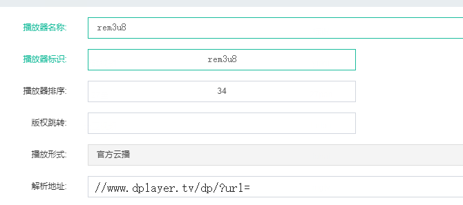
填写完成后点击最下方的[确定]按钮即可
全部操作完成后点击[清空缓存]
此时再看数据，已经可以正确的选择播放器并且可正常播放了
播放器缓存加载设置
此引导可为广大站长自由设置播放器缓存加载
修改播放器缓存参数
在网站目录中找到播放器Dplayer文件夹，找到hls.min.js文件并使用编辑器打开
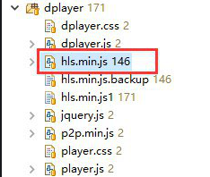
找到需要修改的三个参数并修改,具体操作流程如下图:
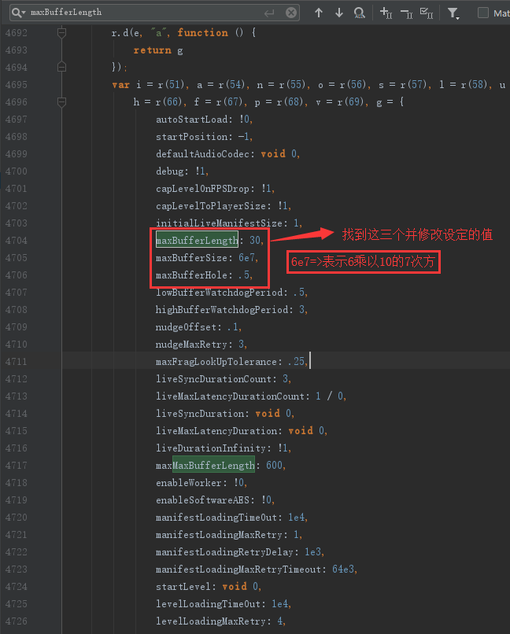
填写完成保存